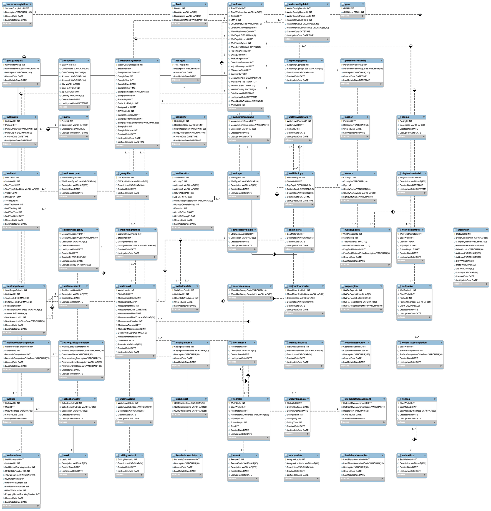

Turning decades of fragmented Texas Water Development Board text files and spreadsheets into a normalized relational database, so groundwater quality could actually be queried, mapped, and eventually linked to health outcomes.
The Texas Water Development Board maintains one of the most comprehensive groundwater datasets in the country, decades of measurements for arsenic, fluoride, nitrate, lithium, manganese, uranium, and hundreds of other minerals, across wells statewide. But it's distributed as fragmented text files and spreadsheets, which makes real analysis, mapping, or public-health research painfully manual. Co-authored with Samson Akomolafe, Blake Armstrong, and Tracy Dower.
The database was designed in Third Normal Form (3NF) to minimize redundancy while staying fast to query. It covers wells, sampling events, mineral concentrations, aquifers, and county geography, all as separate, properly related tables rather than one flat spreadsheet.
ER Diagram

Raw TWDB files were cleaned and standardized, then loaded into the 3NF schema. SQL joins and aggregations validated relational integrity across wells, samples, and counties before the results moved into Python for geospatial visualization.
SQL joins confirmed accurate relational integrity across wells, samples, minerals, and counties, and aggregation queries correctly produced county-level summaries. That eliminated the manual filtering and spreadsheet wrangling the raw TWDB files required, and made it possible to spot geographic patterns directly: arsenic ran higher in parts of West Texas, fluoride clustered in central and western counties, and lithium varied enough across counties to be worth studying against health outcomes, exactly the question the follow-up capstone project picked up.
Each map below is a self-contained Folium choropleth built from the database's county-level aggregation queries. Pan, zoom, or hover a county for its value.
Each map is a self-contained Folium file (~30 MB), loaded on demand so it doesn't slow down the page.
County-level choropleth of Texas groundwater concentrations. Open full-screen ↗
Separating wells, sampling events, and mineral concentrations into their own tables meant a single join could answer questions that would have required manual spreadsheet merging across dozens of raw files.
TWDB sampling frequency varies, so some rural counties have sparse data. Any downstream health-outcome analysis has to account for that unevenness rather than treating every county's estimate as equally reliable.
Arsenic, fluoride, and lithium each showed distinct regional clustering once summarized by county and mapped, patterns that were effectively invisible in the original text files.
Because the design separates raw measurements from derived summaries, the same database became the direct foundation for a later independent study linking lithium exposure to dementia prevalence.